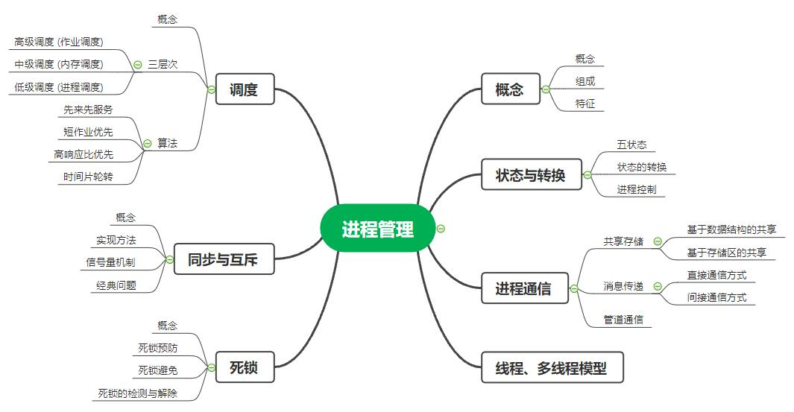
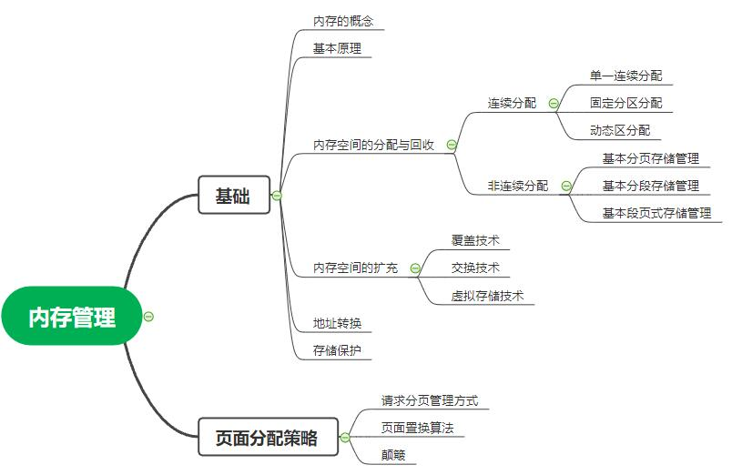

操作系统-整理
第一章：绪论
-
知识框架

1.1 操作系统的基本概念
- 操作系统的定义
- 操作系统是以一组控制和管理计算机硬件和软件资源，合理地对各类作业进行调度，以及方便用户使用的程序的集合
- 引入操作系统的目的
- 提供一个计算机用户与计算机硬件系统之间的接口，使计算机系统更易于使用； 有效地控制和管理计算机系统中各种硬件和软件资源，使之得到更有效的利用； 合理地组织计算机系统的工作流程，以改善系统性能。
- 操作系统的特征
- 并发性：并行性是指两个或多个事件在同一时刻发生； 而并发性是指两个或多个事件在同一时间间隔内发生。
- 共享性：资源共享是指系统中的硬件和软件资源不再为某个程序所独占，而是供多个用户共同使用。 分为两种方式：互斥共享；同时访问。
- 虚拟性：虚拟是指把一个物理上的实体变为若干个逻辑上的对应物。
- 异步性：在多道程序环境中，由于资源等因素的限制，系统中的每道程序何时执行、 多道程序间的执行顺序以及完成每道程序所需的时间都是不确定的，因而也是不可预知的。
- 五大基本功能
- 1.处理器管理
- 进程控制：负责进程的创建、撤销及状态转换
- 进程同步：对并发执行的进程进行协调
- 进程通信：负责完成进程间的信息交换
- 进程调度：按一定算法进行处理器分配
- 2.存储器管理
- 内存分配：按一定的策略为每道程序分配内存
- 内存保护：保证各程序在自己的内存区域内运行而不相互干扰
- 内存扩充：为允许大型作业或多作业的运行，必须借助虚拟存储技术去获得增加内存的效果
- 3.设备管理
- 设备分配：根据一定的设备分配原则对设备进行分配
- 设备传输控制：实现物理的输出/输出操作
- 设备独立性：用户程序中的设备与实际使用的物理设备无关
- 4.文件管理
- 文件存储空间的管理：负责对文件存储空间进行管理，包括存储空间的分配与回收等功能
- 目录管理：目录是为方便文件管理而设置的数据结构，它能提供按名存取的功能
- 文件操作管理：实现文件的操作，负责完成数据的读写
- 文件保护：提供文件保护功能，防止文件遭到破坏
- 5.与用户接口
- 命令接口：提供一组命令供用户直接或间接控制自己的作业，包括联机命令接口和脱机命令接口
- 程序接口：也称为系统调用，由系统提供一组系统调用命令供用户程序和其他系统程序调用
- 图形接口
- 操作系统的发展
- 手工操作时期
- 单道批处理系统
- 优点：多个用户可共享，空闲时间少，易于管理大型重复工作
- 缺点：安全性差，很难调试且成本高
- 特征:自动性；顺序性；单道性；
- 多道批处理系统
- 优点：资源利用率高、可提高内存和I/O设备利用率、系统吞吐量高
- 缺点:作业需要排队、平均周转时间长、无交互能力
- 特征:多道性；无序性；调度性；
- 分时系统
- 优点：扩大了应用范围，便于共享和交换信息，经济实惠
- 缺点：存在可靠性问题、数据通讯问题
- 特征：多路性；独立性；及时性；交互性
- 实时系统
- 优点：专用性；实时性；可靠性高
- 缺点：资源利用率低
- 应用需求:(1)实时控制(2)实时信息处理
- 现代操作系统
- 核心态与用户态
- 核心态：又称管态、系统态，是操作系统管理程序执行时机器所处的状态。 它具有较高的特权，能执行包括特权指令的一切指令，能访问所有寄存器和存储区
- 用户态：又称目态，是用户程序执行时机器所处的状态。 是具有较低特权的执行状态，它只能执行规定的指令，只能访问指定的寄存器和存储区。
- 微内核结构
- 优点：
- 每个服务进程运行在独立的用户进程中，即便某个服务器失败或产生问题，也不会引起系统其他服务器和其他组成部分的崩溃，可靠性好
- 系统具有很好的灵活性，只要接口规范，操作系统可以方便地增删服务功能
- 便于维护，即修改服务器的代码不会影响系统其他部分
- 适合分布式处理的计算环境
- 缺点：
- 效率不高，尤其是通信频繁的系统
第二章：进程管理
-
知识框架
- 
- 进程和程序
- 进程和作业
第三章：内存管理
-
知识框架
- 
- 操作系统的特征
第四章：文件管理
-
知识框架

- Q1:数组和链表的区别
- 操作系统的特征
第五章：设备管理
-
知识框架

- 操作系统的特征